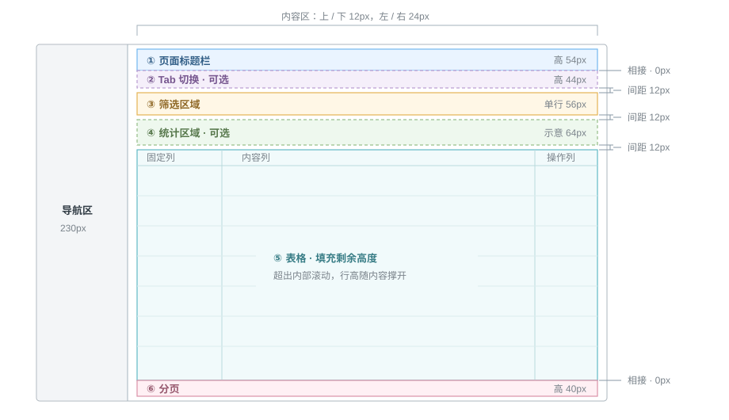

表格配套
表格尺寸规范与页面分区
页面按真实视口比例展示，明确页面留白、组件高度与区域间距。尺寸单位为 CSS px。

页面尺寸与留白
参考视口 1440 × 900，线框图等比缩小；标注单位均为实际 CSS px。
内容区上下 12px、左右 24px，不含左侧导航 230px。
单元格上下 12px、左右 16px。
区域间距
标题 → Tab：0px（组件自身保留内边距）
Tab → 筛选：12px
筛选 → 统计：12px
统计 → 表格：12px
表格 → 分页：0px（共用外框，以分隔线区分）
可选区域与高度
图为包含全部区域的布局参考，Tab、统计按需展示。
隐藏 Tab：标题直接接筛选，间距 0px。
隐藏统计：筛选直接接表格，仅保留一次 12px。
标题默认 54px；筛选单行 56px，可随换行增高；分页 40px。
表格承接剩余高度并在内部滚动；描述型标题随内容增高，副文本到下方字段为 8px。
页面标题栏
基础样式
返回与状态
筛选与按钮
筛选、副文本与操作
统一使用页面标题栏：筛选、副文本和右侧操作按钮均为可选，不配置时不展示，也不保留占位。
Tab 切换
一级 Tab · 下划线样式
用于页面主要内容切换，如设置 / 最近运行、固定筛选 / 执行 SQL、自采数据 / 三方数据、火山云 / 金山云。文字与内容左侧顶格对齐，容器无底色；选中项使用品牌色文字和底部短下划线。
一级 / 二级 Tab · 双层任务状态
一级使用下划线样式；二级状态筛选使用胶囊样式。
Tab 切换 · 数据集
Tab 切换 · Episode
任务筛选栏
任务筛选栏 · 少于六项（3 项）
任务筛选栏 · 超过六项（8 项）
默认显示前六项，点击刷新右侧的“展开”查看其余筛选项。
任务筛选栏 · 分组筛选
各组独立展开收起，保留筛选内容。
卡片
表格基础
支持左右固定列和中间横向滚动。行高由本行最高内容撑开，上下各留 12px，左右各留 16px，其余内容垂直居中。
业务分类
说明业务环节与类型 · 胶囊标签
业务环节
标注子类型
过程与来源
说明当前阶段与操作来源 · 描边标签
绿色 · 启用、上线、已标注、已归档
蓝色 · 标注中、处理中
黄色 · 待发布、待处理
橙色 · 暂停、驳回
灰色 · 草稿、下线、未标注、分配
启用状态
发布状态
处理状态
来源标签
属性信息
补充关联信息与特征 · 浅底标签
人员标签
版本标签
优先级标签
结果标识
结果用图标与文字表达，无底色、无描边。
质检结果
备选外观
仅作样式比较，尚未应用到业务页面。
实心标签
深色底 · 白字 · 小圆角
纯描边标签
透明底 · 细描边 · 同色文字
左侧色条标签
浅底色 · 内嵌短竖线 · 无外框
列宽定义
以下宽度包含左右各 16px 内边距；“当前宽度”随容器变化实时更新。
短内容列不拉伸，剩余空间分给文字列；最小列宽总和超过容器时横向滚动。左侧两列与右侧操作列固定。
分页
分页 · 多页列表 · 1050 条
分页 · 单页 / 空列表
表格质检状态
用于数据列表的质检结论单元格。结论、错误数量与修改状态分行展示；“已修改”位于错误数量下方，标签圆角为 4px。
| 数据 ID | 质检结论 | 说明 |
|---|---|---|
| 7523785 | 合格1条错误已修改 | 错误已修正，等待重新提交 |
| 7523786 | 操作失误 | 仅显示质检结论 |
| 7523787 | 不合格1条错误 | 存在错误，尚未修改 |